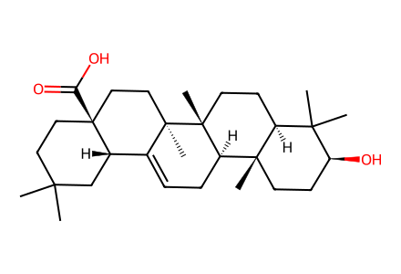
CC1(C)CC[C@]2(C(=O)O)CC[C@]3(C)C(=CC[C@@H]4[C@@]5(C)CC[C@H](O)C(C)(C)[C@@H]5CC[C@]43C)[C@@H]2C1Main/SI displayed preparative network, including original unsuccessful route, substrate preparation and positive skeletal-editing controls; hypothetical biogenesis/DFT intermediates excluded. Facts compiled deterministically; independent review pending.
完整 JSON · 逐步 CSV · 路线序列 · SDF · HRMS 核对
| 事件 | 分子连接 | 报告产率 | Canonical reaction SMILES |
|---|---|---|---|
| A01 | 5 → S1 | S1: 90% | CC1(C)CC[C@]2(C(=O)O)CC[C@]3(C)C(=CC[C@@H]4[C@@]5(C)CC[C@H](O)C(C)(C)[C@@H]5CC[C@]43C)[C@@H]2C1>>CC(=O)O[C@H]1CC[C@]2(C)[C@H]3CC=C4[C@@H]5CC(C)(C)CC[C@]5(C(=O)ON5C(=O)c6ccccc6C5=O)CC[C@@]4(C)[C@]3(C)CC[C@H]2C1(C)C |
| A02 | S1 → 14 | 14: 94% | CC(=O)O[C@H]1CC[C@]2(C)[C@H]3CC=C4[C@@H]5CC(C)(C)CC[C@]5(C(=O)ON5C(=O)c6ccccc6C5=O)CC[C@@]4(C)[C@]3(C)CC[C@H]2C1(C)C>>CC(=O)O[C@H]1CC[C@]2(C)[C@H]3CC=C4C5=C(CCC(C)(C)C5)CC[C@@]4(C)[C@]3(C)CC[C@H]2C1(C)C |
| A03 | 14 → 8 | 8: 67% | CC(=O)O[C@H]1CC[C@]2(C)[C@H]3CC=C4C5=C(CCC(C)(C)C5)CC[C@@]4(C)[C@]3(C)CC[C@H]2C1(C)C>>CC(=O)O[C@H]1CC[C@]2(C)[C@H]3CC=C4C(=O)CC(C)(C)CCC(=O)CC[C@@]4(C)[C@]3(C)CC[C@H]2C1(C)C |
| A04 | 8 → 9 + 10 | 9: 58%; 10: 35% | CC(=O)O[C@H]1CC[C@]2(C)[C@H]3CC=C4C(=O)CC(C)(C)CCC(=O)CC[C@@]4(C)[C@]3(C)CC[C@H]2C1(C)C>>CC(=O)O[C@H]1CC[C@]2(C)[C@H]3CC=C4[C@@]5(O)CC(C)(C)CCC(=O)[C@@H]5C[C@@]4(C)[C@]3(C)CC[C@H]2C1(C)C.CC(=O)O[C@H]1CC[C@]2(C)[C@H]3CC=C4[C@@]5(O)CC(C)(C)CCC(=O)[C@H]5C[C@@]4(C)[C@]3(C)CC[C@H]2C1(C)C |
| A05 | 8 → 11 | 11: 73% | CC(=O)O[C@H]1CC[C@]2(C)[C@H]3CC=C4C(=O)CC(C)(C)CCC(=O)CC[C@@]4(C)[C@]3(C)CC[C@H]2C1(C)C>>CC(=O)O[C@H]1CC[C@]2(C)[C@H]3CC=C4C5=C(C[C@@]4(C)[C@]3(C)CC[C@H]2C1(C)C)C(=O)CCC(C)(C)C5 |
| A06 | 10 → 11 | 11: 69% | CC(=O)O[C@H]1CC[C@]2(C)[C@H]3CC=C4[C@@]5(O)CC(C)(C)CCC(=O)[C@@H]5C[C@@]4(C)[C@]3(C)CC[C@H]2C1(C)C>>CC(=O)O[C@H]1CC[C@]2(C)[C@H]3CC=C4C5=C(C[C@@]4(C)[C@]3(C)CC[C@H]2C1(C)C)C(=O)CCC(C)(C)C5 |
| A07 | 8 → S2 | S2: 75% | CC(=O)O[C@H]1CC[C@]2(C)[C@H]3CC=C4C(=O)CC(C)(C)CCC(=O)CC[C@@]4(C)[C@]3(C)CC[C@H]2C1(C)C>>CC(=O)O[C@H]1CC[C@]2(C)[C@H]3CC=C4C(=O)CC(C)(C)CCC5(CC[C@@]4(C)[C@]3(C)CC[C@H]2C1(C)C)SCCS5 |
| A08 | S2 → 12 | 12: 98% | CC(=O)O[C@H]1CC[C@]2(C)[C@H]3CC=C4C(=O)CC(C)(C)CCC5(CC[C@@]4(C)[C@]3(C)CC[C@H]2C1(C)C)SCCS5>>CC(=O)O[C@H]1CC[C@]2(C)[C@H]3CC=C4C(O[Si](C)(C)C)=CC(C)(C)CCC5(CC[C@@]4(C)[C@]3(C)CC[C@H]2C1(C)C)SCCS5 |
| A09 | 12 → 13 | 13: 59% | CC(=O)O[C@H]1CC[C@]2(C)[C@H]3CC=C4C(O[Si](C)(C)C)=CC(C)(C)CCC5(CC[C@@]4(C)[C@]3(C)CC[C@H]2C1(C)C)SCCS5>>CC(=O)O[C@H]1CC[C@]2(C)[C@H]3CC=C4C(=O)C5=C(CCC5(C)C)CC[C@@]4(C)[C@]3(C)CC[C@H]2C1(C)C |
| B01 | 14 → 16 | 16: 50% | CC(=O)O[C@H]1CC[C@]2(C)[C@H]3CC=C4C5=C(CCC(C)(C)C5)CC[C@@]4(C)[C@]3(C)CC[C@H]2C1(C)C>>CC(=O)O[C@H]1CC[C@]2(C)[C@H]3CC=C4C5=CC(C)(C)CC[C@]5(OO)CC[C@@]4(C)[C@]3(C)CC[C@H]2C1(C)C |
| B02 | 16 → 19 | 19: 34% | CC(=O)O[C@H]1CC[C@]2(C)[C@H]3CC=C4C5=CC(C)(C)CC[C@]5(OO)CC[C@@]4(C)[C@]3(C)CC[C@H]2C1(C)C>>CC(=O)O[C@H]1CC[C@]2(C)[C@H]3CC=C4C(=O)[C@H]5C(C)(C)CC[C@]5(O)CC[C@@]4(C)[C@]3(C)CC[C@H]2C1(C)C |
| B03 | 14 → 19 | 19: 38% | CC(=O)O[C@H]1CC[C@]2(C)[C@H]3CC=C4C5=C(CCC(C)(C)C5)CC[C@@]4(C)[C@]3(C)CC[C@H]2C1(C)C>>CC(=O)O[C@H]1CC[C@]2(C)[C@H]3CC=C4C(=O)[C@H]5C(C)(C)CC[C@]5(O)CC[C@@]4(C)[C@]3(C)CC[C@H]2C1(C)C |
| B04 | 14 → 20 | 20: 63% | CC(=O)O[C@H]1CC[C@]2(C)[C@H]3CC=C4C5=C(CCC(C)(C)C5)CC[C@@]4(C)[C@]3(C)CC[C@H]2C1(C)C>>CC(=O)O[C@H]1CC[C@]2(C)[C@H]3C[C@@H]4OO[C@H]5C6=C4[C@@](C)(CC[C@@]6(OO)CCC5(C)C)[C@]3(C)CC[C@H]2C1(C)C |
| B05 | 16 → 20 | 20: 39% | CC(=O)O[C@H]1CC[C@]2(C)[C@H]3CC=C4C5=CC(C)(C)CC[C@]5(OO)CC[C@@]4(C)[C@]3(C)CC[C@H]2C1(C)C>>CC(=O)O[C@H]1CC[C@]2(C)[C@H]3C[C@@H]4OO[C@H]5C6=C4[C@@](C)(CC[C@@]6(OO)CCC5(C)C)[C@]3(C)CC[C@H]2C1(C)C |
| B06 | 16 → 21 | 21: 75% | CC(=O)O[C@H]1CC[C@]2(C)[C@H]3CC=C4C5=CC(C)(C)CC[C@]5(OO)CC[C@@]4(C)[C@]3(C)CC[C@H]2C1(C)C>>CC(=O)O[C@H]1CC[C@]2(C)[C@H]3CC=C4C5=CC(C)(C)CC[C@]5(O)CC[C@@]4(C)[C@]3(C)CC[C@H]2C1(C)C |
| C01 | 5 → 22 | 22: 88% | CC1(C)CC[C@]2(C(=O)O)CC[C@]3(C)C(=CC[C@@H]4[C@@]5(C)CC[C@H](O)C(C)(C)[C@@H]5CC[C@]43C)[C@@H]2C1>>CC1(C)CC[C@]2(C(=O)ON3C(=O)c4ccccc4C3=O)CC[C@]3(C)C(=CC[C@@H]4[C@@]5(C)CC[C@H](O)C(C)(C)[C@@H]5CC[C@]43C)[C@@H]2C1 |
| C02 | 22 → 23 | not reported | CC1(C)CC[C@]2(C(=O)ON3C(=O)c4ccccc4C3=O)CC[C@]3(C)C(=CC[C@@H]4[C@@]5(C)CC[C@H](O)C(C)(C)[C@@H]5CC[C@]43C)[C@@H]2C1>>CC1(C)CCC2=C(C1)C1=CC[C@@H]3[C@@]4(C)CC[C@H](O)C(C)(C)[C@@H]4CC[C@@]3(C)[C@]1(C)CC2 |
| C03 | 23 → 1 | 1: 69% | CC1(C)CCC2=C(C1)C1=CC[C@@H]3[C@@]4(C)CC[C@H](O)C(C)(C)[C@@H]4CC[C@@]3(C)[C@]1(C)CC2>>CC1(C)CC[C@]2(O)CC[C@]3(C)C(=CC[C@@H]4[C@@]5(C)CC[C@H](O)C(C)(C)[C@@H]5CC[C@]43C)C(=O)[C@@H]12 |
| C04 | 1 → 24b | 24b: 94% | CC1(C)CC[C@]2(O)CC[C@]3(C)C(=CC[C@@H]4[C@@]5(C)CC[C@H](O)C(C)(C)[C@@H]5CC[C@]43C)C(=O)[C@@H]12>>CC1(C)CC[C@]2(O)CC[C@]3(C)C(=CC[C@@H]4[C@@]5(C)CCC(=O)C(C)(C)[C@@H]5CC[C@]43C)C(=O)[C@@H]12 |
| C05 | 24b → 2 | 2: 54% | CC1(C)CC[C@]2(O)CC[C@]3(C)C(=CC[C@@H]4[C@@]5(C)CCC(=O)C(C)(C)[C@@H]5CC[C@]43C)C(=O)[C@@H]12>>CC1(C)CC[C@]2(O)CC[C@]3(C)[C@H](CC[C@@H]4[C@@]5(C)CCC(=O)C(C)(C)[C@@H]5CC[C@]43C)C(=O)[C@@H]12 |
| D01 | 23 → 24a | 24a: 96% | CC1(C)CCC2=C(C1)C1=CC[C@@H]3[C@@]4(C)CC[C@H](O)C(C)(C)[C@@H]4CC[C@@]3(C)[C@]1(C)CC2>>CC1(C)CCC2=C(C1)C1=CC[C@@H]3[C@@]4(C)CCC(=O)C(C)(C)[C@@H]4CC[C@@]3(C)[C@]1(C)CC2 |
| D02 | 24a → 25a | 25a: 99% | CC1(C)CCC2=C(C1)C1=CC[C@@H]3[C@@]4(C)CCC(=O)C(C)(C)[C@@H]4CC[C@@]3(C)[C@]1(C)CC2>>CC1(C)CCC2=C(C1)C1=CC[C@@H]3[C@@]4(C)CCC(=NO)C(C)(C)[C@@H]4CC[C@@]3(C)[C@]1(C)CC2 |
| D03 | 23 → 26a | 26a: 83% | CC1(C)CCC2=C(C1)C1=CC[C@@H]3[C@@]4(C)CC[C@H](O)C(C)(C)[C@@H]4CC[C@@]3(C)[C@]1(C)CC2>>C#CCCC(=O)O[C@H]1CC[C@]2(C)[C@H]3CC=C4C5=C(CCC(C)(C)C5)CC[C@@]4(C)[C@]3(C)CC[C@H]2C1(C)C |
| D04 | 23 → 27a | 27a: 78% | CC1(C)CCC2=C(C1)C1=CC[C@@H]3[C@@]4(C)CC[C@H](O)C(C)(C)[C@@H]4CC[C@@]3(C)[C@]1(C)CC2>>COCO[C@H]1CC[C@]2(C)[C@H]3CC=C4C5=C(CCC(C)(C)C5)CC[C@@]4(C)[C@]3(C)CC[C@H]2C1(C)C |
| D24 | 24a → 24b | 24b: 71% | CC1(C)CCC2=C(C1)C1=CC[C@@H]3[C@@]4(C)CCC(=O)C(C)(C)[C@@H]4CC[C@@]3(C)[C@]1(C)CC2>>CC1(C)CC[C@]2(O)CC[C@]3(C)C(=CC[C@@H]4[C@@]5(C)CCC(=O)C(C)(C)[C@@H]5CC[C@]43C)C(=O)[C@@H]12 |
| D25 | 25a → 25b | 25b: 69% | CC1(C)CCC2=C(C1)C1=CC[C@@H]3[C@@]4(C)CCC(=NO)C(C)(C)[C@@H]4CC[C@@]3(C)[C@]1(C)CC2>>CC1(C)CC[C@]2(O)CC[C@]3(C)C(=CC[C@@H]4[C@@]5(C)CCC(=NO)C(C)(C)[C@@H]5CC[C@]43C)C(=O)[C@@H]12 |
| D26 | 26a → 26b | 26b: 76% | C#CCCC(=O)O[C@H]1CC[C@]2(C)[C@H]3CC=C4C5=C(CCC(C)(C)C5)CC[C@@]4(C)[C@]3(C)CC[C@H]2C1(C)C>>C#CCCC(=O)O[C@H]1CC[C@]2(C)[C@H]3CC=C4C(=O)[C@H]5C(C)(C)CC[C@]5(O)CC[C@@]4(C)[C@]3(C)CC[C@H]2C1(C)C |
| D27 | 27a → 27b | 27b: 72% | COCO[C@H]1CC[C@]2(C)[C@H]3CC=C4C5=C(CCC(C)(C)C5)CC[C@@]4(C)[C@]3(C)CC[C@H]2C1(C)C>>COCO[C@H]1CC[C@]2(C)[C@H]3CC=C4C(=O)[C@H]5C(C)(C)CC[C@]5(O)CC[C@@]4(C)[C@]3(C)CC[C@H]2C1(C)C |
| E28 | 28a → 28b | 28b: 77% | CC(=O)O[C@H]1CC[C@@]2(C)C(=CC[C@@H]3[C@@H]2CC[C@]2(C)C(=O)CC[C@@H]32)C1>>CC(=O)O[C@H]1CC[C@]2(C)[C@H]3CC[C@]4(C)C(=O)CC[C@H]4[C@@H]3[C@@H](C=O)[C@]2(O)C1 |
| E29 | 29a → 29b | 29b: 73% | C[C@H](CO)[C@H]1CC[C@H]2[C@@H]3CC=C4C[C@@H](O)CC[C@]4(C)[C@H]3CC[C@]12C>>C[C@H](CO)[C@H]1CC[C@H]2[C@@H]3[C@@H](C=O)[C@]4(O)C[C@@H](O)CC[C@]4(C)[C@H]3CC[C@]12C |
| E30 | 30a → 3 | 3: 47% | C[C@@H]1CC[C@@]2(OC1)O[C@H]1C[C@H]3[C@@H]4CC=C5C[C@@H](O)CC[C@]5(C)[C@H]4CC[C@]3(C)[C@H]1[C@@H]2C>>C[C@@H]1CC[C@@]2(OC1)O[C@H]1C[C@H]3[C@@H]4[C@@H](C=O)[C@]5(O)C[C@@H](O)CC[C@]5(C)[C@H]4CC[C@]3(C)[C@H]1[C@@H]2C |
| E31 | 31a → 31b | 31b: 86% | C1CCC2=C(C1)CCCC2>>O=C1CCCCC2=C1CCC2 |
| E32 | 32a → 32b | 32b: 63% | CCOC(=O)C1(C(=O)OCC)C[C@H]2CC3=C(CCCC3)C[C@H]2C1>>CCOC(=O)C1(C(=O)OCC)C[C@@H]2CC3=C(C(=O)CCCC3)[C@@H]2C1 |
| E33 | 33a → 33b | 33b: 76% | C1CCC2=C(C1)C[C@H]1COC[C@H]1C2>>O=C1CCCCC2=C1C[C@H]1COC[C@@H]21 |
| F01 | tetrahydrophthalic-anhydride → S4 | not reported | O=C1OC(=O)C2=C1CCCC2>>C=C1CCCCC1=C |
| F02 | S4 + maleic-anhydride → S5 | not reported | C=C1CCCCC1=C.O=C1C=CC(=O)O1>>OC[C@@H]1CC2=C(CCCC2)C[C@@H]1CO |
| F03 | S5 → 32a | 32a: 39% | OC[C@@H]1CC2=C(CCCC2)C[C@@H]1CO>>CCOC(=O)C1(C(=O)OCC)C[C@H]2CC3=C(CCCC3)C[C@H]2C1 |
| F04 | S5 → 33a | 33a: 86% | OC[C@@H]1CC2=C(CCCC2)C[C@@H]1CO>>C1CCC2=C(C1)C[C@H]1COC[C@H]1C2 |
| G01 | 34 → 4 + S6 + S7 | 4: 40%; S6: 19%; S7: 25% | CC(=O)O[C@H]1CC[C@]2(C)[C@H]3CC=C4[C@@H]5CC(C)(C)CC[C@]5(C)CC[C@@]4(C)[C@]3(C)CC[C@H]2C1(C)C>>CC(=O)O[C@H]1CC[C@]2(C)[C@H]3C(=O)C=C4[C@@H]5CC(C)(C)CC[C@]5(C)CC[C@@]4(C)[C@]3(C)CC[C@H]2C1(C)C.CC(=O)O[C@H]1CC[C@]2(C)[C@H]3[C@@H]4O[C@@H]4[C@]4(C)C(=CC[C@@]5(C)CCC(C)(C)C[C@H]54)[C@]3(C)CC[C@H]2C1(C)C.CO[C@@H]1C=C2[C@@H]3CC(C)(C)CC[C@]3(C)CC[C@@]2(C)[C@]2(C)CC[C@H]3C(C)(C)[C@@H](OC(C)=O)CC[C@]3(C)[C@@H]12 |
| control-TFA-half | 8 → 10 + 11 | 10: 11%; 11: 57% | CC(=O)O[C@H]1CC[C@]2(C)[C@H]3CC=C4C(=O)CC(C)(C)CCC(=O)CC[C@@]4(C)[C@]3(C)CC[C@H]2C1(C)C>>CC(=O)O[C@H]1CC[C@]2(C)[C@H]3CC=C4C5=C(C[C@@]4(C)[C@]3(C)CC[C@H]2C1(C)C)C(=O)CCC(C)(C)C5.CC(=O)O[C@H]1CC[C@]2(C)[C@H]3CC=C4[C@@]5(O)CC(C)(C)CCC(=O)[C@@H]5C[C@@]4(C)[C@]3(C)CC[C@H]2C1(C)C |
| control-FeCl3 | 8 → 10 | 10: 55% | CC(=O)O[C@H]1CC[C@]2(C)[C@H]3CC=C4C(=O)CC(C)(C)CCC(=O)CC[C@@]4(C)[C@]3(C)CC[C@H]2C1(C)C>>CC(=O)O[C@H]1CC[C@]2(C)[C@H]3CC=C4[C@@]5(O)CC(C)(C)CCC(=O)[C@@H]5C[C@@]4(C)[C@]3(C)CC[C@H]2C1(C)C |
| control-Ti | 8 → 10 + 11 | 10: 29%; 11: 56% | CC(=O)O[C@H]1CC[C@]2(C)[C@H]3CC=C4C(=O)CC(C)(C)CCC(=O)CC[C@@]4(C)[C@]3(C)CC[C@H]2C1(C)C>>CC(=O)O[C@H]1CC[C@]2(C)[C@H]3CC=C4C5=C(C[C@@]4(C)[C@]3(C)CC[C@H]2C1(C)C)C(=O)CCC(C)(C)C5.CC(=O)O[C@H]1CC[C@]2(C)[C@H]3CC=C4[C@@]5(O)CC(C)(C)CCC(=O)[C@@H]5C[C@@]4(C)[C@]3(C)CC[C@H]2C1(C)C |
| control-alumina | 8 → 10 | 10: 64% | CC(=O)O[C@H]1CC[C@]2(C)[C@H]3CC=C4C(=O)CC(C)(C)CCC(=O)CC[C@@]4(C)[C@]3(C)CC[C@H]2C1(C)C>>CC(=O)O[C@H]1CC[C@]2(C)[C@H]3CC=C4[C@@]5(O)CC(C)(C)CCC(=O)[C@@H]5C[C@@]4(C)[C@]3(C)CC[C@H]2C1(C)C |

CC1(C)CC[C@]2(C(=O)O)CC[C@]3(C)C(=CC[C@@H]4[C@@]5(C)CC[C@H](O)C(C)(C)[C@@H]5CC[C@]43C)[C@@H]2C1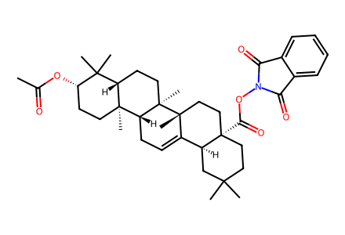
CC(=O)O[C@H]1CC[C@]2(C)[C@H]3CC=C4[C@@H]5CC(C)(C)CC[C@]5(C(=O)ON5C(=O)c6ccccc6C5=O)CC[C@@]4(C)[C@]3(C)CC[C@H]2C1(C)C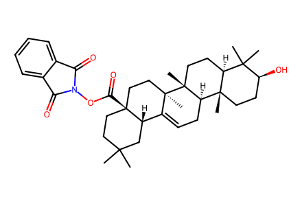
CC1(C)CC[C@]2(C(=O)ON3C(=O)c4ccccc4C3=O)CC[C@]3(C)C(=CC[C@@H]4[C@@]5(C)CC[C@H](O)C(C)(C)[C@@H]5CC[C@]43C)[C@@H]2C1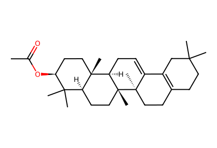
CC(=O)O[C@H]1CC[C@]2(C)[C@H]3CC=C4C5=C(CCC(C)(C)C5)CC[C@@]4(C)[C@]3(C)CC[C@H]2C1(C)C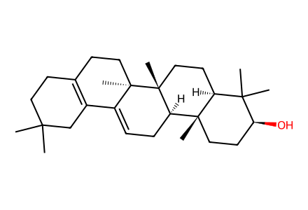
CC1(C)CCC2=C(C1)C1=CC[C@@H]3[C@@]4(C)CC[C@H](O)C(C)(C)[C@@H]4CC[C@@]3(C)[C@]1(C)CC2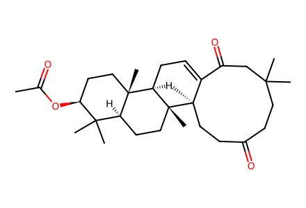
CC(=O)O[C@H]1CC[C@]2(C)[C@H]3CC=C4C(=O)CC(C)(C)CCC(=O)CC[C@@]4(C)[C@]3(C)CC[C@H]2C1(C)C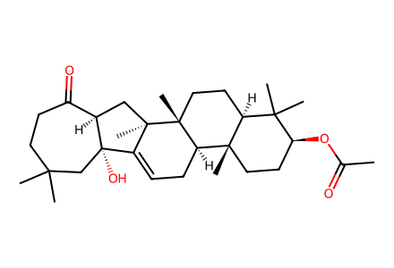
CC(=O)O[C@H]1CC[C@]2(C)[C@H]3CC=C4[C@@]5(O)CC(C)(C)CCC(=O)[C@H]5C[C@@]4(C)[C@]3(C)CC[C@H]2C1(C)CCC(=O)O[C@H]1CC[C@]2(C)[C@H]3CC=C4[C@@]5(O)CC(C)(C)CCC(=O)[C@@H]5C[C@@]4(C)[C@]3(C)CC[C@H]2C1(C)C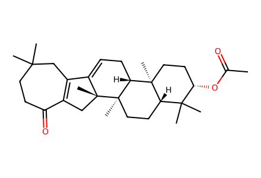
CC(=O)O[C@H]1CC[C@]2(C)[C@H]3CC=C4C5=C(C[C@@]4(C)[C@]3(C)CC[C@H]2C1(C)C)C(=O)CCC(C)(C)C5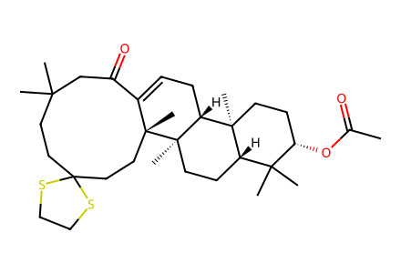
CC(=O)O[C@H]1CC[C@]2(C)[C@H]3CC=C4C(=O)CC(C)(C)CCC5(CC[C@@]4(C)[C@]3(C)CC[C@H]2C1(C)C)SCCS5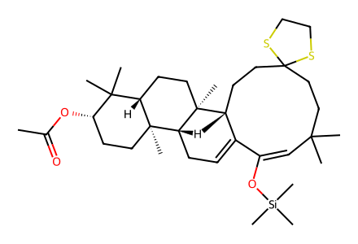
CC(=O)O[C@H]1CC[C@]2(C)[C@H]3CC=C4C(O[Si](C)(C)C)=CC(C)(C)CCC5(CC[C@@]4(C)[C@]3(C)CC[C@H]2C1(C)C)SCCS5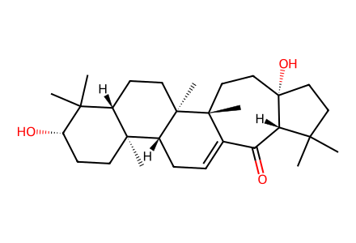
CC1(C)CC[C@]2(O)CC[C@]3(C)C(=CC[C@@H]4[C@@]5(C)CC[C@H](O)C(C)(C)[C@@H]5CC[C@]43C)C(=O)[C@@H]12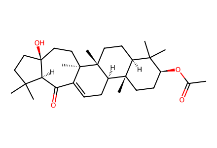
CC(=O)O[C@H]1CC[C@]2(C)[C@H]3CC=C4C(=O)[C@H]5C(C)(C)CC[C@]5(O)CC[C@@]4(C)[C@]3(C)CC[C@H]2C1(C)C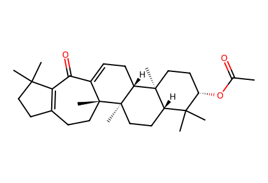
CC(=O)O[C@H]1CC[C@]2(C)[C@H]3CC=C4C(=O)C5=C(CCC5(C)C)CC[C@@]4(C)[C@]3(C)CC[C@H]2C1(C)C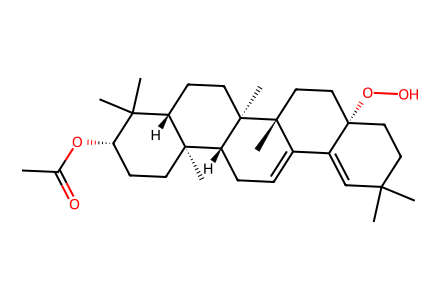
CC(=O)O[C@H]1CC[C@]2(C)[C@H]3CC=C4C5=CC(C)(C)CC[C@]5(OO)CC[C@@]4(C)[C@]3(C)CC[C@H]2C1(C)C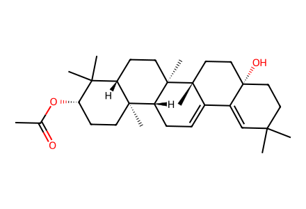
CC(=O)O[C@H]1CC[C@]2(C)[C@H]3CC=C4C5=CC(C)(C)CC[C@]5(O)CC[C@@]4(C)[C@]3(C)CC[C@H]2C1(C)C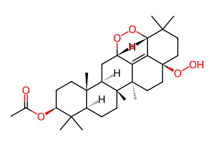
CC(=O)O[C@H]1CC[C@]2(C)[C@H]3C[C@@H]4OO[C@H]5C6=C4[C@@](C)(CC[C@@]6(OO)CCC5(C)C)[C@]3(C)CC[C@H]2C1(C)C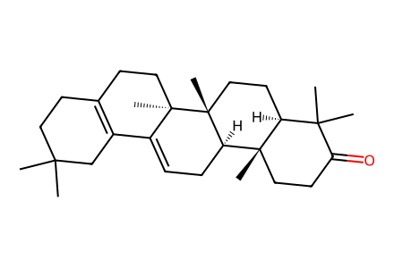
CC1(C)CCC2=C(C1)C1=CC[C@@H]3[C@@]4(C)CCC(=O)C(C)(C)[C@@H]4CC[C@@]3(C)[C@]1(C)CC2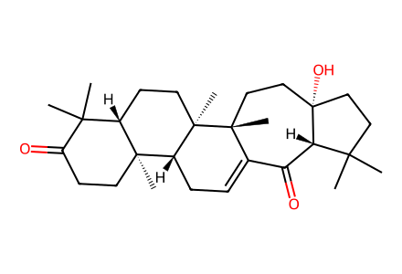
CC1(C)CC[C@]2(O)CC[C@]3(C)C(=CC[C@@H]4[C@@]5(C)CCC(=O)C(C)(C)[C@@H]5CC[C@]43C)C(=O)[C@@H]12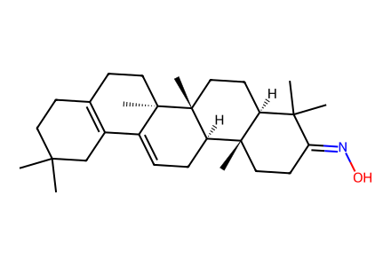
CC1(C)CCC2=C(C1)C1=CC[C@@H]3[C@@]4(C)CCC(=NO)C(C)(C)[C@@H]4CC[C@@]3(C)[C@]1(C)CC2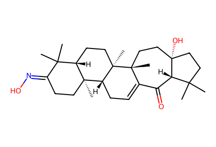
CC1(C)CC[C@]2(O)CC[C@]3(C)C(=CC[C@@H]4[C@@]5(C)CCC(=NO)C(C)(C)[C@@H]5CC[C@]43C)C(=O)[C@@H]12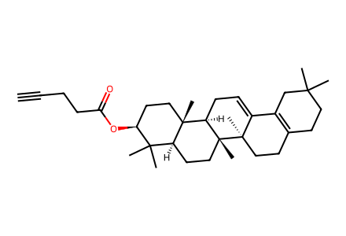
C#CCCC(=O)O[C@H]1CC[C@]2(C)[C@H]3CC=C4C5=C(CCC(C)(C)C5)CC[C@@]4(C)[C@]3(C)CC[C@H]2C1(C)C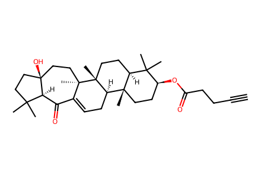
C#CCCC(=O)O[C@H]1CC[C@]2(C)[C@H]3CC=C4C(=O)[C@H]5C(C)(C)CC[C@]5(O)CC[C@@]4(C)[C@]3(C)CC[C@H]2C1(C)C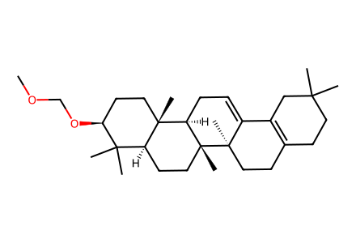
COCO[C@H]1CC[C@]2(C)[C@H]3CC=C4C5=C(CCC(C)(C)C5)CC[C@@]4(C)[C@]3(C)CC[C@H]2C1(C)C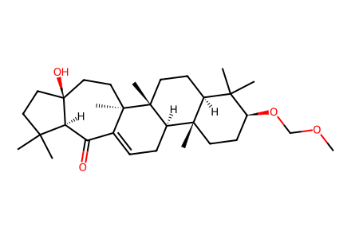
COCO[C@H]1CC[C@]2(C)[C@H]3CC=C4C(=O)[C@H]5C(C)(C)CC[C@]5(O)CC[C@@]4(C)[C@]3(C)CC[C@H]2C1(C)C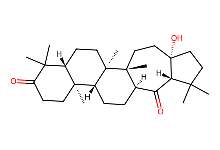
CC1(C)CC[C@]2(O)CC[C@]3(C)[C@H](CC[C@@H]4[C@@]5(C)CCC(=O)C(C)(C)[C@@H]5CC[C@]43C)C(=O)[C@@H]12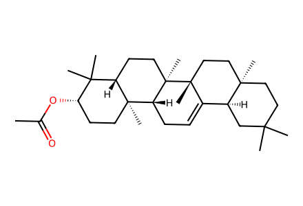
CC(=O)O[C@H]1CC[C@]2(C)[C@H]3CC=C4[C@@H]5CC(C)(C)CC[C@]5(C)CC[C@@]4(C)[C@]3(C)CC[C@H]2C1(C)C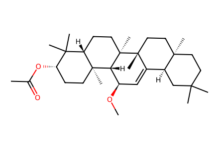
CO[C@@H]1C=C2[C@@H]3CC(C)(C)CC[C@]3(C)CC[C@@]2(C)[C@]2(C)CC[C@H]3C(C)(C)[C@@H](OC(C)=O)CC[C@]3(C)[C@@H]12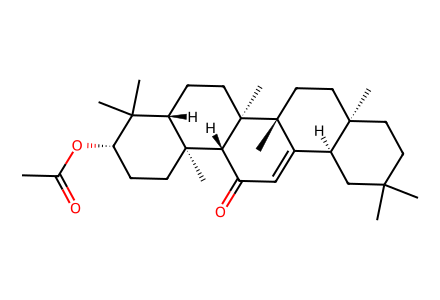
CC(=O)O[C@H]1CC[C@]2(C)[C@H]3C(=O)C=C4[C@@H]5CC(C)(C)CC[C@]5(C)CC[C@@]4(C)[C@]3(C)CC[C@H]2C1(C)C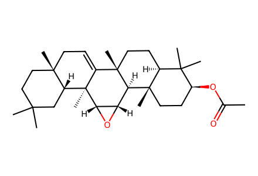
CC(=O)O[C@H]1CC[C@]2(C)[C@H]3[C@@H]4O[C@@H]4[C@]4(C)C(=CC[C@@]5(C)CCC(C)(C)C[C@H]54)[C@]3(C)CC[C@H]2C1(C)C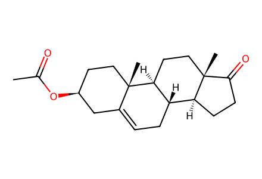
CC(=O)O[C@H]1CC[C@@]2(C)C(=CC[C@@H]3[C@@H]2CC[C@]2(C)C(=O)CC[C@@H]32)C1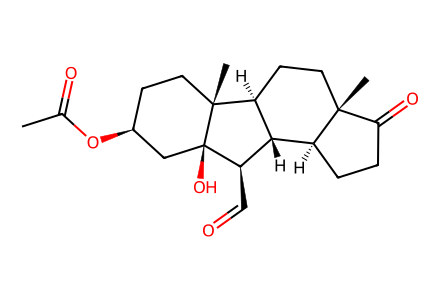
CC(=O)O[C@H]1CC[C@]2(C)[C@H]3CC[C@]4(C)C(=O)CC[C@H]4[C@@H]3[C@@H](C=O)[C@]2(O)C1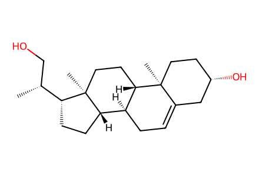
C[C@H](CO)[C@H]1CC[C@H]2[C@@H]3CC=C4C[C@@H](O)CC[C@]4(C)[C@H]3CC[C@]12C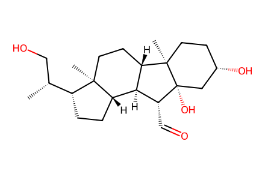
C[C@H](CO)[C@H]1CC[C@H]2[C@@H]3[C@@H](C=O)[C@]4(O)C[C@@H](O)CC[C@]4(C)[C@H]3CC[C@]12C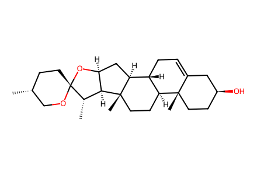
C[C@@H]1CC[C@@]2(OC1)O[C@H]1C[C@H]3[C@@H]4CC=C5C[C@@H](O)CC[C@]5(C)[C@H]4CC[C@]3(C)[C@H]1[C@@H]2C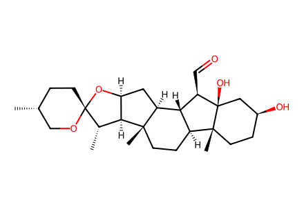
C[C@@H]1CC[C@@]2(OC1)O[C@H]1C[C@H]3[C@@H]4[C@@H](C=O)[C@]5(O)C[C@@H](O)CC[C@]5(C)[C@H]4CC[C@]3(C)[C@H]1[C@@H]2C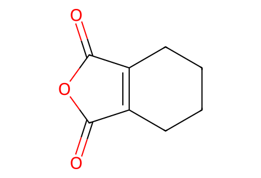
O=C1OC(=O)C2=C1CCCC2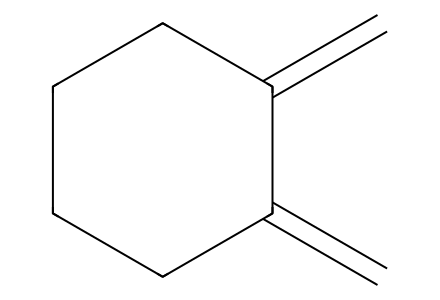
C=C1CCCCC1=C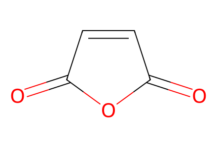
O=C1C=CC(=O)O1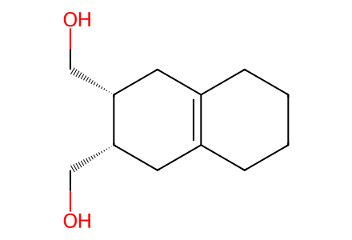
OC[C@@H]1CC2=C(CCCC2)C[C@@H]1CO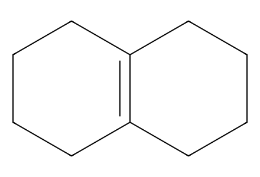
C1CCC2=C(C1)CCCC2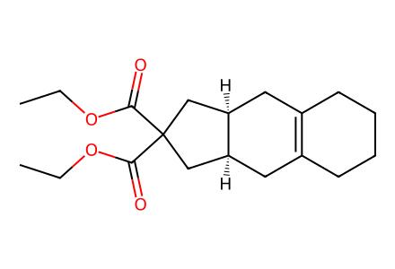
CCOC(=O)C1(C(=O)OCC)C[C@H]2CC3=C(CCCC3)C[C@H]2C1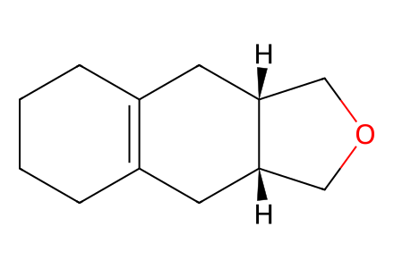
C1CCC2=C(C1)C[C@H]1COC[C@H]1C2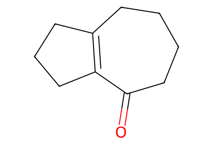
O=C1CCCCC2=C1CCC2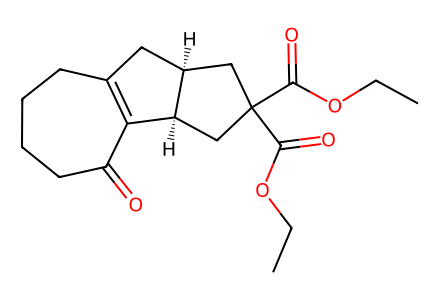
CCOC(=O)C1(C(=O)OCC)C[C@@H]2CC3=C(C(=O)CCCC3)[C@@H]2C1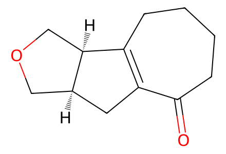
O=C1CCCCC2=C1C[C@H]1COC[C@@H]21